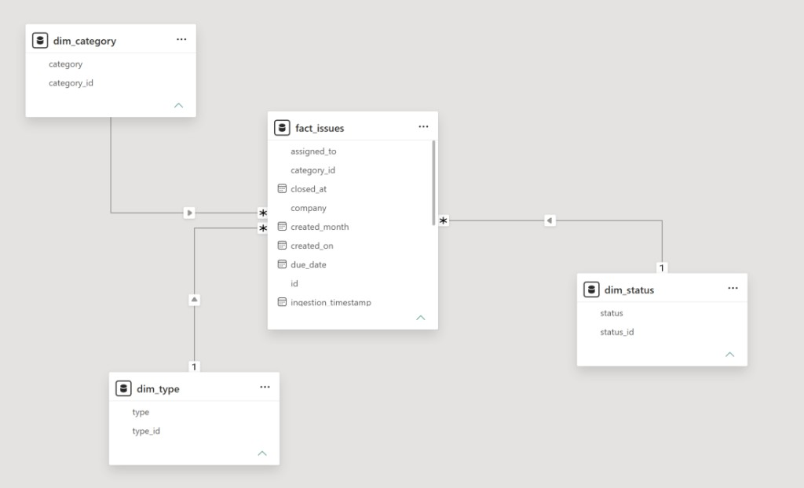
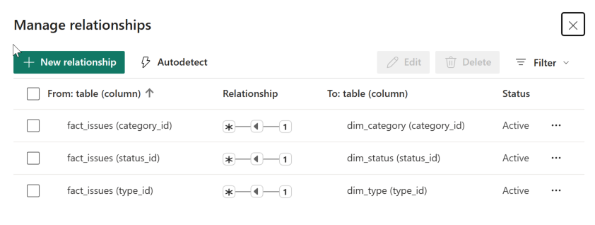

Path to Power BI
- Sheet
- 08
- Date
- 13 Oct 2026
- Status
- Model checked
- Step
- 04
Power BI is workflow step 04. It starts after Report 07 closes CDE setup, and after a raw copy, a clean layer, and a SQL model exist. The reporting source for this practice project is the Snowdon issue workbook, plus a Forma files export if the account can produce one.
1. Where step 04 sits
| Chart step | Name | Meaning for this project |
|---|---|---|
| −7 | CDE setup | Current step. Finish it with Report 07 before any pipeline folder is created. |
| 01 | Raw data preserved | An unchanged copy of the issue workbook, and a Files log export if Forma provides one. |
| 02 | Python cleaning and validation | Profile, standardise, and separate raw values from derived values. |
| 03 | Structured SQL database | Issue facts at one row per issue ID. Document facts only from a real files export. |
| 04 | Power BI reporting | Executive and issue pages. A document page only when document rows exist. |
Chart steps 0 and the public RFI workbook belong to a separate procurement register. This path uses Snowden Towers Sample Issue Summary.xlsx. Three issue rows typed RFI remain rows in that workbook.
2. Sequence
-
Preserve raw inputs.
After the document register exists, create
snowdon_analytics/data/raw/and copy the issue workbook there unchanged. If Forma exports a files log or an issues list, save that export beside it. Record file name, retrieval time, and source platform. -
Clean in Python, in a separate layer.
Read the Issues sheet. Keep original columns in the raw layer. Add
source_file,source_sheet, andingestion_timestampas ingestion metadata. Standardise dates, identifiers, and blanks only in the clean layer. Write failed rows to a rejection list. Load the Overview sheet on its own. It is a cover, not 289 issue facts. - Check the raw file against Report 06 before modelling. Expect 289 issue rows, 289 unique IDs, status counts from Open 148 through In review 3, and the fill rates already recorded for due date, closed date, description, root cause, and location.
- Model only tables the columns can fill. See the table below. Skip review-event and version facts until an export contains those histories.
- Build Power BI on the SQL tables. Reconcile every published total to a SQL query and to the 289 source rows.
3. Folders, when the pipeline starts
snowdon_analytics/ ├── data/ │ ├── raw/ │ ├── staged/ │ └── curated/ ├── scripts/ ├── sql/ ├── powerbi/ ├── validation/ └── docs/
4. SQL tables
| Table | Grain | Include when |
|---|---|---|
raw_issues | One exported issue row | The issue workbook is copied to raw. |
fact_issues | One issue per ID | The 289 IDs stay unique after cleaning. |
dim_status | One status label | Status is present on every row. |
dim_category | One category label | Category is present on every row. |
dim_date | One calendar date | Created on, and any other date that survives conversion. |
raw_documents / fact_documents | One document row | A Forma files export exists. The hand-written register can be described in the case study. It is not a substitute extract. |
fact_document_versions | One version | Version history is exported. |
fact_reviews | One review event | Review history is exported. |
5. Measures that match this workbook
- Total issues, and counts by the nine status labels.
- Counts by category, type, assignee, and company.
- Issues with a due date, and issues with a location.
- Created-on trend after the Excel serials are converted and checked.
Closed and Completed are separate status labels (11 rows each). Closed at is filled on 14 rows, so a resolution-time measure waits until those two fields are defined against each other. The published overdue rule is on the lifecycle page.
6. Power BI pages
The published pages are Issue Executive Overview, Issue Lifecycle & Overdue Monitoring, Issue Category, Type & Safety Analysis, and Detailed Issue Register & Data Quality. Open the overview in Power BI. Open the lifecycle page in Power BI. Open the safety page in Power BI. Open the register in Power BI. A plain-language reading of those four pages is the conclusion.
| Page | Contents |
|---|---|
| Executive | 289 issues, status composition, category filter, created-on trend if the dates check out. |
| Issues | Status, category, type, assignee, location, and a row-level table with the issue ID. |
| Overview | Published Issue Executive Overview. Year slicer, five cards, created-on, status, and category. |
| Lifecycle | Published Issue Lifecycle & Overdue Monitoring. Due group, overdue by status and category, and average unresolved age. |
| Safety | Published Issue Category, Type & Safety Analysis. Safety cards, top categories, top types, and safety issues by month. |
| Register | Published Detailed Issue Register & Data Quality. Blank fields, closure-date exceptions, and the filterable issue table. |
| Conclusion | Plain-language reading of the four published pages. Finished, overdue, safety, and the gaps in place and date. |
| Documents | File type and the register fields, only after a files export is in the model. |
| Lineage | Source file name, ingestion time, and the validation totals from Report 06. |
7. Publish checks
- Raw row count equals 289 and equals
fact_issues. - Power BI status totals match the Report 06 status table.
- Relationships do not multiply issue rows.
- Blank location, description, root cause, and closed date stay blank in the visuals.
- The page states the trial limits and the sample-project source.
8. Model check
The Power BI model has the four loaded tables and three active relationships. Each relationship is many-to-one, and the filter runs from the lookup into fact_issues. A count of id with no slicer selected reads 289.
| From | To | Status |
|---|---|---|
fact_issues (category_id) | dim_category (category_id) | Active |
fact_issues (status_id) | dim_status (status_id) | Active |
fact_issues (type_id) | dim_type (type_id) | Active |

